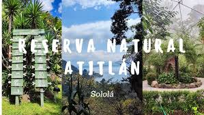

SANTUARIOS DE GUATEMALA
Explora los santuarios naturales de Guatemala
Guatemala es hogar de santuarios naturales llenos de belleza y espiritualidad. Estos lugares sagrados ofrecen un refugio único para la biodiversidad y son perfectos para quienes buscan paz y conexión con la naturaleza. Descubre algunos de los santuarios más impresionantes y vive una experiencia inolvidable. 🌿✨
Santuarios Naturales de Guatemala
Reserva Natural Atitlán
Descripción: Ubicada en los alrededores del Lago de Atitlán, esta reserva es famosa por sus impresionantes paisajes y biodiversidad.
Los visitantes pueden recorrer senderos que ofrecen vistas espectaculares del lago y los volcanes cercanos.
Costos: Entrada: Q50–Q75 por persona.
Excursión guiada: Q250–Q450 por persona.

Parque Nacional Tikal
Descripción: Tikal es uno de los sitios arqueológicos más importantes de Guatemala, ubicado en el corazón de la selva de Petén. Además de su enorme valor histórico, es un santuario natural donde los visitantes pueden observar animales como monos y tucanes mientras exploran las antiguas ruinas mayas.
Costos: Entrada: Q150–Q200 por persona (tarifa de entrada general).
Excursión guiada: Q300–Q600 por persona.

Reserva Natural de las Cuevas de Candelaria
Descripción: Ubicada en Chimaltenango, esta reserva es ideal para los amantes de la espeleología y el ecoturismo. Se pueden explorar sus cuevas y disfrutar de una experiencia tranquila en un entorno natural único.
Costos: Entrada: Q40–Q75 por persona.
Excursión guiada: Q250–Q400 por persona.

si te interesa saber mas mira nuestro catalogo con toda la información